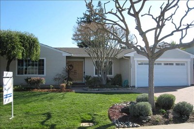

Overseas
In Vietnam, I served as a director at Delphi Industry Co. Ltd. (Ho Chi Minh City), for the Quality Control and Production Management departments.
As one of the company's first employees—now numbering in the thousands—I was also heavily involved with the computer network, which I helped maintain, supervising all work that was done in that regard.
We started out using MS DOS, which now seems like ancient history. I am grateful to Delphi, for the wonderful opportunity that it gave me for professional development, as well as the many friendships I developed during those years.
U.S.
During my first 15 years in the United States, I worked as office manager at Pacific Century Realty, in Silicon Valley, California.
I actually did some low-level coding, as my responsibilities included posting regularly to sites like Craig's List, where the ads called for use of some very basic HTML. I also helped supervise developers (hired primarily through Elance/Upwork) who created websites for us over the years.
Though my knowledge of HTML was very basic, it was nonetheless a helpful foundation for my studies at Treehouse, toward the Front-End Web Development Techdegree.